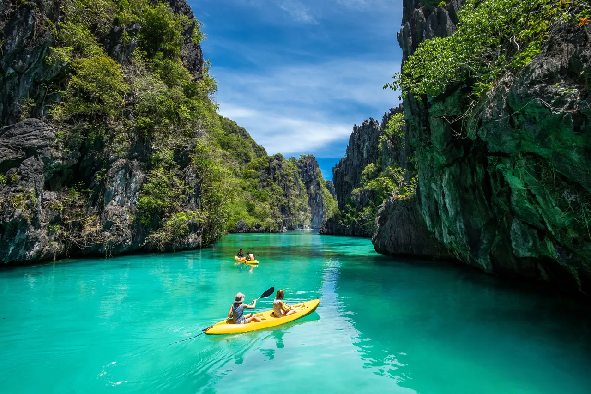

Let's Explore the Philippines! 🇵🇭
Discover its culture, places, food, and holidays.

The Philippines is a vibrant archipelagic nation in Southeast Asia comprising 7,641 islands in the western Pacific Ocean.
The Philippines, officially the Republic of the Philippines, is an archipelagic country in Southeast Asia. Located in the western Pacific Ocean, it consists of about 7,641 islands, with a total area of about 300,000 square kilometers.
The islands are broadly categorized into three main geographical divisions: Luzon, Visayas, and Mindanao. With a population of over 114 million, the Philippines is one of the world's most populous countries.
Quick Facts 🇵🇭
7,641
Islands
Manila
Capital City
3
Main Island Groups
Philippine Eagle
National Bird
Cebu City
Oldest City
What Can You Discover?
🌺 Culture
Learn about Filipino traditions, languages, music, dances, and the importance of family.
Learn More🍜Foods
Discover popular FIlipino dishes and the flavors that make Filipino cuisine unique.
Learn More🎆Holidays
Discover Filipino festivals and holidays, from colorful celebrations to meaningful traditions shared with family and communities.
Learn More🏨Hotels
Experience Filipino hotels and the warm hospitality, comfort, and culture that make every stay memorable.
Learn More🍴Restaurants
Explore Filipino restaurants and savor the rich flavors and traditions that define Filipino cuisine.
Learn More